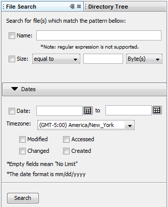

File Search is one of the main windows in Autopsy.
By using File Search, you can specify, filter, and show the directories and files that you want to see from the images in the current opened case.
Currently, Autopsy only supports 3 categories in File Search: Name, Size, and Date based search.
Note: For now, Autopsy doesn't support keyword search and regular expression.
To see how to open File Search, click here.
Note: The File Search Window is opened and closed automatically. If there's a case opened and there is at least one image inside that case, File Search Window can't be closed.
To see how to use File Search, click here.
Here's an example of a File Search window: 